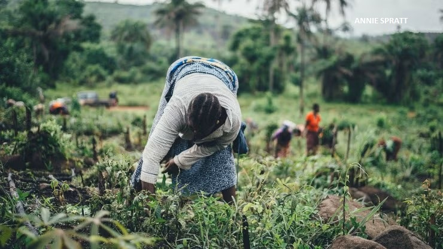

Jones Kanjira is an innovative Monitoring & Evaluation (M&E) expert and data analyst
with over 7 years of experience in research, M&E, and data analytics.
He excels in conducting impact and performance evaluations, utilizing digital data collection tools,
and transforming complex data into actionable insights that drive meaningful change.
This portfolio showcases his projects, developed using a mix of synthetic and real open-source
datasets to demonstrate his analytical capabilities.

In this project, we use Microsoft Power BI to explore synthetic climate and crop production data from Kaggle to analyze the effects of climate change and adaptive responses on global maize production trends from 2000 and 2024.
Key areas of exploration included visualizing yield trends in relation to rising CO₂ emissions and the increasing frequency of extreme weather events per year.
The project also examined the global economic impact of climate-induced yield losses (in USD) and evaluated the role of adaptive strategies
e.g., adoption of drought-resistant varieties and organic farming on yield resilience.

An exciting new addition is on the way! This upcoming project will use Tableau to explore a global
migration dataset that captures employment migration patterns across 140+ countries, highlighting
emerging professions and the latest employment trends shaping the global workforce.

In this project, we dive into the thrilling world of the 2023/24 English Premier League season,
using real season data to design aesthetically striking visualizations in MS Excel. Beyond the graphics,
a regression analysis was run to examine what best determined a team’s position on the table: attack or defence?
The results were striking — a team’s attacking strength was a far more significant predictor of position than its
defensive strength (p-value = 8.19 × 10⁻⁹).

This article emphasizes the pivotal role of data in identifying and addressing the multifaceted
causes of food insecurity, such as gender inequality, climate change, and food waste.
It advocates for enhanced data literacy, open data frameworks, and community engagement to
empower stakeholders in developing effective, localized solutions for sustainable food systems
in Africa's rapidly urbanizing regions.